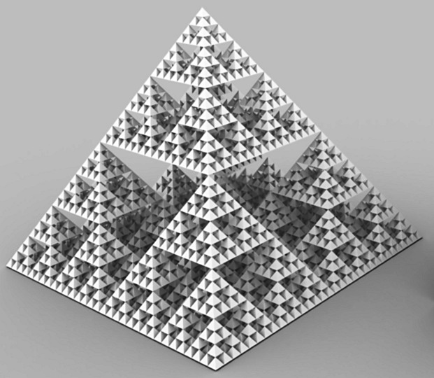

Recursion is the technique of solving a large problem by breaking it down into smaller sub-problems of the same kind. More precisely a Recursive Algorithm consists of what we call a base case and a recursive case.
Base Case: the case for which the solution is can be stated non-recursively. The base case, or halting case, of a function is the problem that we know the answer to, that can be solved without any more recursive calls. The base case is what stops the recursion from continuing on forever. Every recursive function must have at least one base case (many functions have more than one).
Recursive Case: the case for which the solution is expressed in terms of a smaller version of itself. Also called the general case.
There are three questions you should verify when writing a recurisve algorithm:
Base Case Question: Is there a non-recursive way out of the function?
Reducing Problem: Does each recursive call involve a smaller case of the original problem that will eventually reach the base case?
General Case Question: More obviously, assuming each recursive call works correctly, does the whole function work correctly?
Recursive Call: a method call in which the method being called is the same as the one making the call.
Direct Recursion: Recursion in which a method directly calls itself (palindrome, factorial).
There are other types of recursion too ...indirect recursion, tail, binary, mutual
Recursion and the Call Stack: Recursive functions often use a good deal of memory and stack space during their operation. The stack space is the memory set aside for a program to use to keep track of all of the functions and their local states currently in the middle of execution.
Circularity, Infinite recursion, making sure we reach the base case Each recursive algrithm must bring you closer to the answer. circularity = a recursive function being called with the same arguments as a previous call, leading to an endless cycle of recursion.